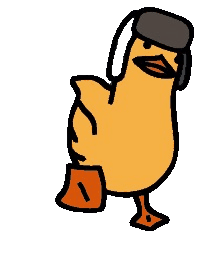

Marcos Thallyson P.Lima
Desenvolvedor Front-end Jr
- 
Sobre
meu nome é Thallyson, tenho 18 anos e vou falar um pouco sobre mim.
Eu me apaixonei pela programação e dediquei o meu tempo para aprender, desde cedo sempre gostei de tecnologia e tenho um sonho de trabalhar nessa área, nesse ano comecei a graduar em ciências da computação e comecei ir a fundo sobre programação, no incio comecei por python, agora estou estudando HTML, CSS e JavaScript. e futuramente planejo fazer um curso profissionalizante de tecnico de Hardware. Meus hobbies são tocar contra-baixo e violão, assistir anime e jogar FPS e RPG, sou fã das séries soulslike